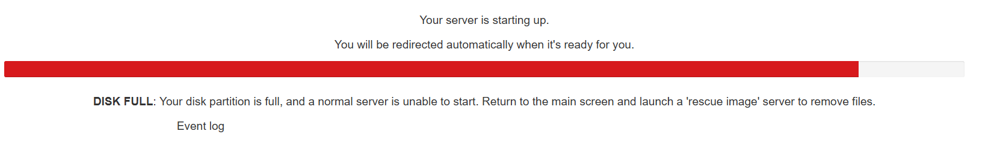
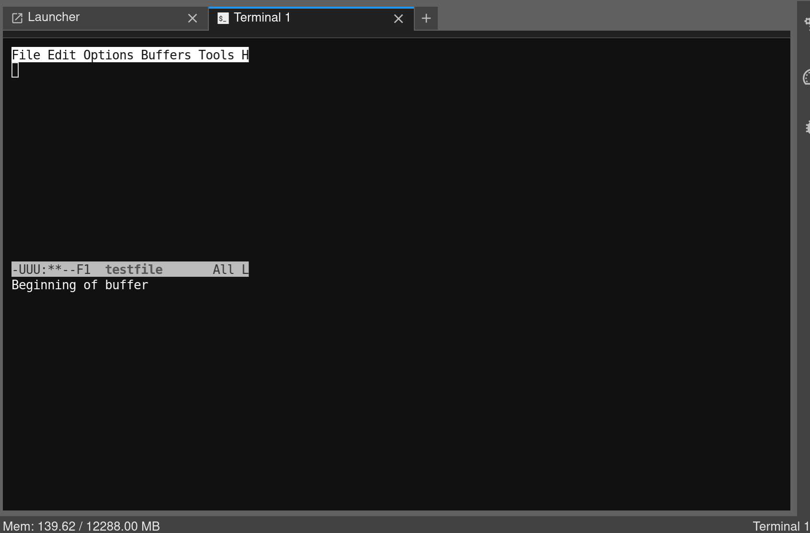

Help, something’s broken!
Important
- If your issue is not listed below, you can get help by:
Filing a ticket via ServiceNow
Joining the
#eaf-userschannel onfnal.slack.com(e-mail eaf-admins AT fnal.gov for an invitation if you don’t already have access to the slack)Joining and emailing the mailing list:
eaf-users@fnal.gov
My disk is full!
In the event your storage is full, the server will not be able to start. It should display a message:
{kind=link}
You will need to go back to the hub control panel, and launch a “rescue” server, listed under Fermilab generic notebooks.
This image has limited CPU and memory resources, and only a Terminal launcher. In the rescue notebook, your normal
storage area is mounted as /tmphome. You can remove files to get back under quota as in the example below,
and then start a normal server.
/usr/bin/id: cannot find name for group ID 5063
*** RESCUE IMAGE: Your home directory is temporarily mounted at /tmphome ***
/tmphome > df -h --output=size,used,avail,pcent,target .
Size Used Avail Use% Mounted on
4.0G 4.0G 0 100% /tmphome
/tmphome > rm bigfile
/tmphome > df -h --output=size,used,avail,pcent,target .
Size Used Avail Use% Mounted on
4.0G 3.7G 372M 91% /tmphome
/tmphome >
There are no python kernels in my launcher!
The default kernels (ipykernel and safemode) are missing:

Check to see if you have a ~/.jupyter/jupyter_config.json file; if it is configuring CondaKernelSpecManager,
it will disable all non-conda kernels by default. You can move it out of the way and restart your server.
Otherwise, check to make sure you’re not in a rescue notebook.
My terminal is using the wrong window size!
{kind=link}
If more than one browser is connected to your notebook, terminal-based applications (emacs, vim, less, etc.) will use the lowest screen resolution. Closing the connection from the browser with the lower resolution will resolve the problem; otherwise, you may need to start a new terminal launcher, or as a last restort, restart your server.
My server is almost out of memory!
Each time you launch a notebook server, it starts a long-running python process.
If you have created objects, python will only free the memory if you delete them
manually (using del), or if you restart the kernel (which kills the original
long-running process, deleting all in-memory objects, and starts a new long-running
process).
For example:
import os, psutil
print(f"{psutil.Process(os.getpid()).memory_info()[0]/1e9} GB in use")
# create an object that uses 1 GB of memory
gb = bytearray(1024*1024*1000)
print(f"{psutil.Process(os.getpid()).memory_info()[0]/1e9} GB in use")
# delete the 1 GB object
del gb
print(f"{psutil.Process(os.getpid()).memory_info()[0]/1e9} GB in use")
results in:
0.065445888 GB in use
1.114046464 GB in use
0.06547456 GB in use